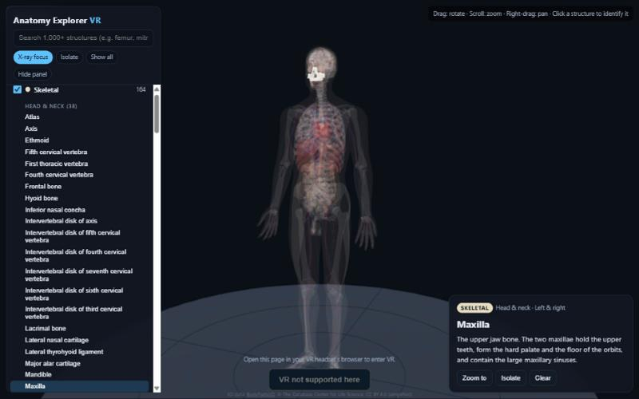

01 · System overview
At a Glance
VR controls
Point a controller ray at any structure and pull the trigger to identify it. Hand tracking is supported, and menus float in the scene.
Desktop controls
Without a headset, drag to rotate, scroll to zoom, right-drag to pan, and click to identify.
Study tools
Search 1,000+ structures, toggle whole systems on and off, isolate one part, or use X-ray focus to fade everything else.
Data
All meshes are packed into one binary file with a JSON index, so the whole body loads in a single request.
02 · Coverage
What's Inside
Cardiovascular (425 structures), muscular (201), skeletal (164), nervous and senses (102), digestive (70), respiratory (35), plus the reproductive, skin, urinary, endocrine and lymphatic systems. The source dataset has no lungs or spinal cord, so I generated those: the lungs wrap the real bronchial tree, and the spinal cord is traced through the real vertebral canal.

3D anatomy data: BodyParts3D, © The Database Center for Life Science, CC BY 4.0 (simplified).